Front Crankshaft Seal: Service and Repair
11 14 005 - Replacing front crankshaft seal (N52K)

Special tools required:
- 11 0 371 11 0 370 Extractor
- 11 0 372 11 0 370 Extractor
- 11 9 221 11 9 220 Puller
- 11 9 222
- 11 9 224 11 9 220 Puller
- 11 9 231 11 9 230 Installer
- 11 9 232 11 9 230 Installer
- 11 9 233 11 9 230 Installer
- 11 9 234 11 9 230 Installer

Necessary preliminary tasks:
- Remove vibration damper Service and Repair
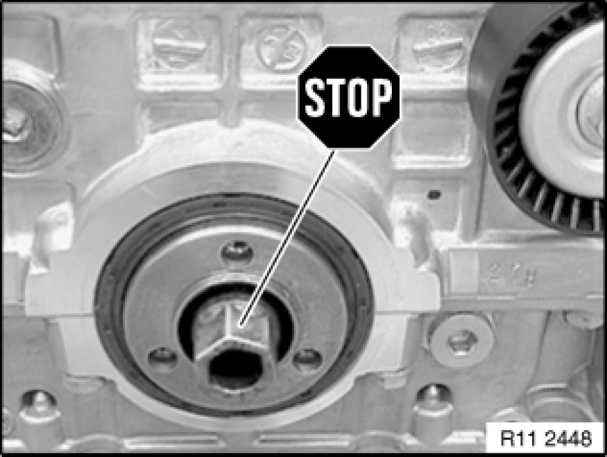
Important!
Do not release central bolt.
If the central bolt is released, the sprocket wheels of the timing chain and the oil pump will no longer be non-positively connected to the crankshaft. Inlet and exhaust camshafts can turn in relation to crankshaft.
Risk of damage!
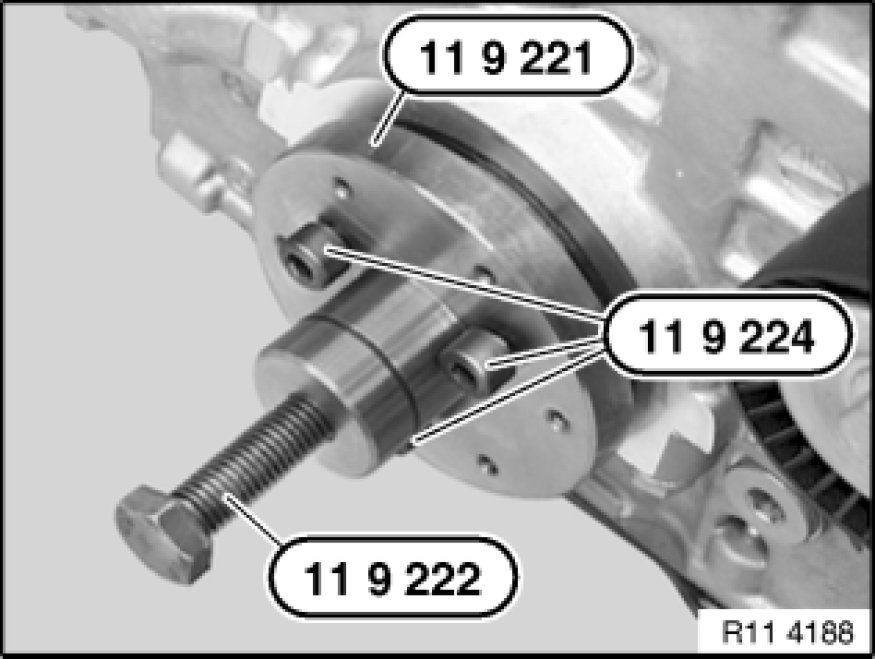
Turn back special tool 11 9 222.
Push special tool 11 9 221 11 9 220 Puller onto crankshaft.
Important!
When screws are tightened down (special tool 11 9 224 11 9 220 Puller), crankshaft seal is pressed inwards approx. 1 mm and thus slackened for subsequent removal.
Insert screws (special tool 11 9 224 11 9 220 Puller) and tighten down to approx. 20 Nm.
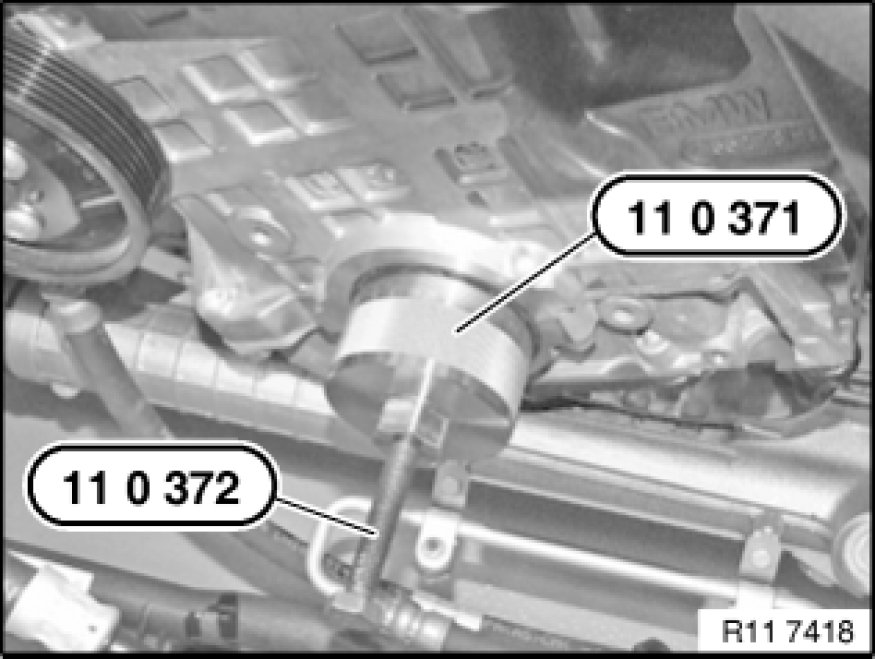
Screw special tool 11 0 371 11 0 370 Extractor to 80 Nm into crankshaft seal.
Screw in spindle 11 0 372 11 0 370 Extractor.
Release crankshaft seal from housing.
Repeat the operation several times if necessary.
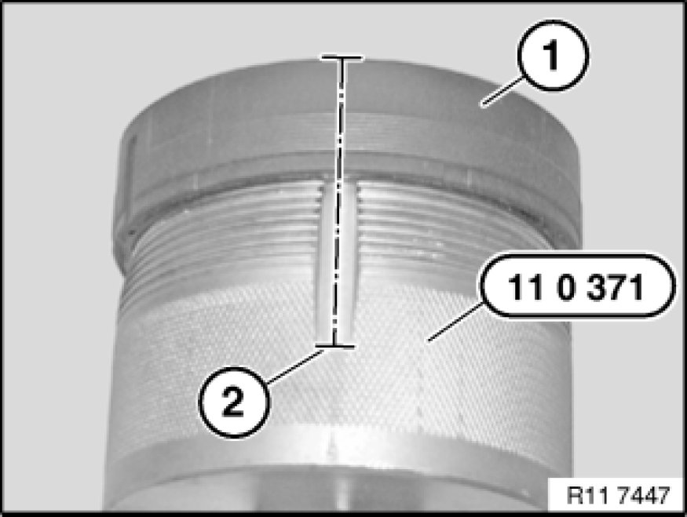
Carefully saw open crankshaft seal (1) at cutting line (2).
Remove crankshaft seal (1) from special tool 11 0 371 11 0 370 Extractor.

Important!
The following text describes installation and sealing between the engine block and crankshaft seal.
The engine block will not be leakproof at the outside of the crankshaft seal if you fail to comply with the individual work steps and the work sequence.
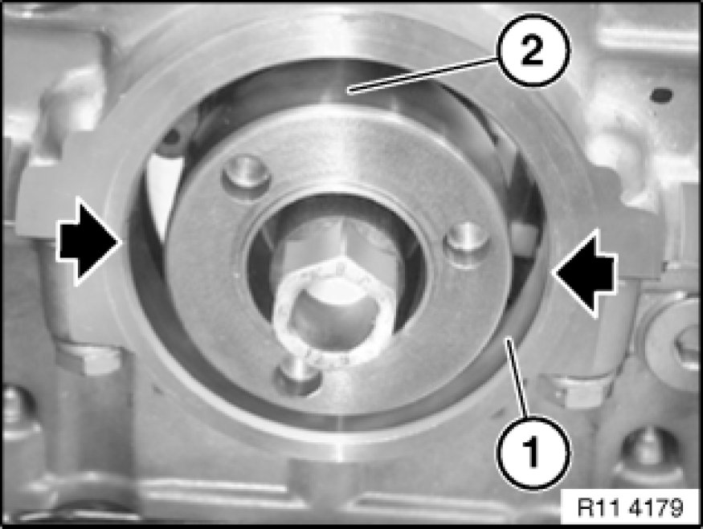
Installation:
Clean sealing surface (1) and degrease thoroughly in area of housing partition.
Apply a light coat of oil to running surface (2) of crankshaft seal.
Illustration N42.
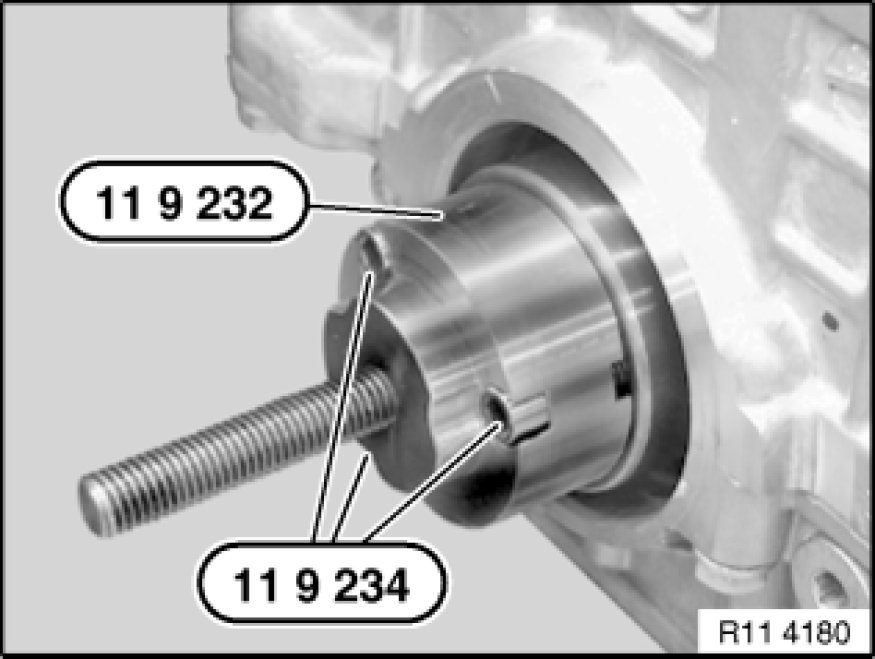
Screw special tool 11 9 232 11 9 230 Installer with screws (special tool 11 9 234 11 9 230 Installer) to crankshaft.
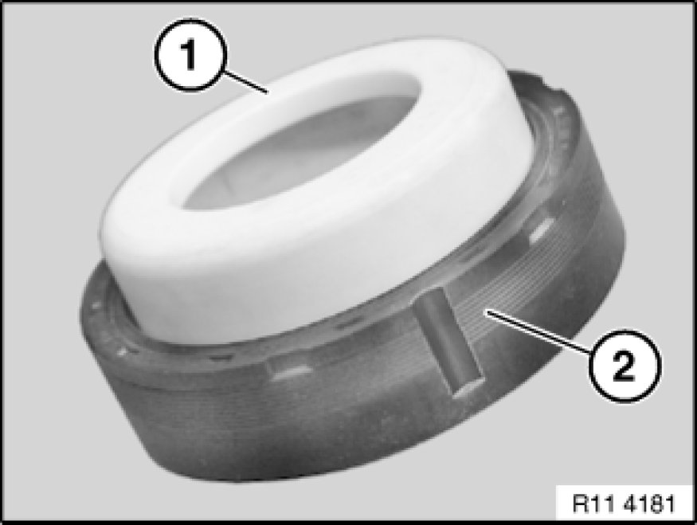
Note:
Support sleeve (1) is supplied with crankshaft seal (2).
When crankshaft seal (2) is installed, only support sleeve (1) may be used as a slip sleeve.
Crankshaft seal (2) has a groove on both left and right sides.
Important!
After installation, the grooves must be filled with sealing compound.
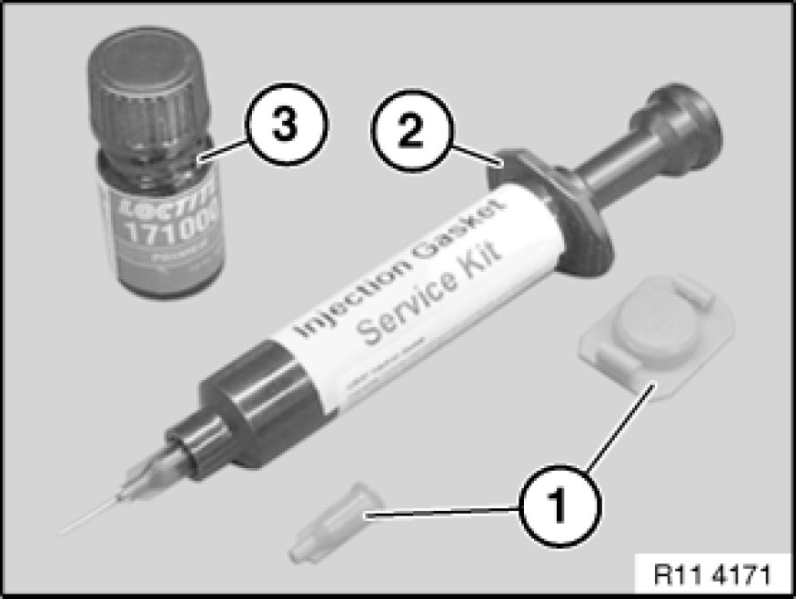
Note:
The required parts are available from the BMW Parts Service (Electronic Parts Catalog ETK).
Remove screw caps (1) from injector (2).
Screw on metering needle.
Insert piston for pressing out.
Injector (2) contains the sealing compound Loctite, manufacturer's number 128357.
Bottle (3) contains the primer Loctite, manufacturer's number 171000.
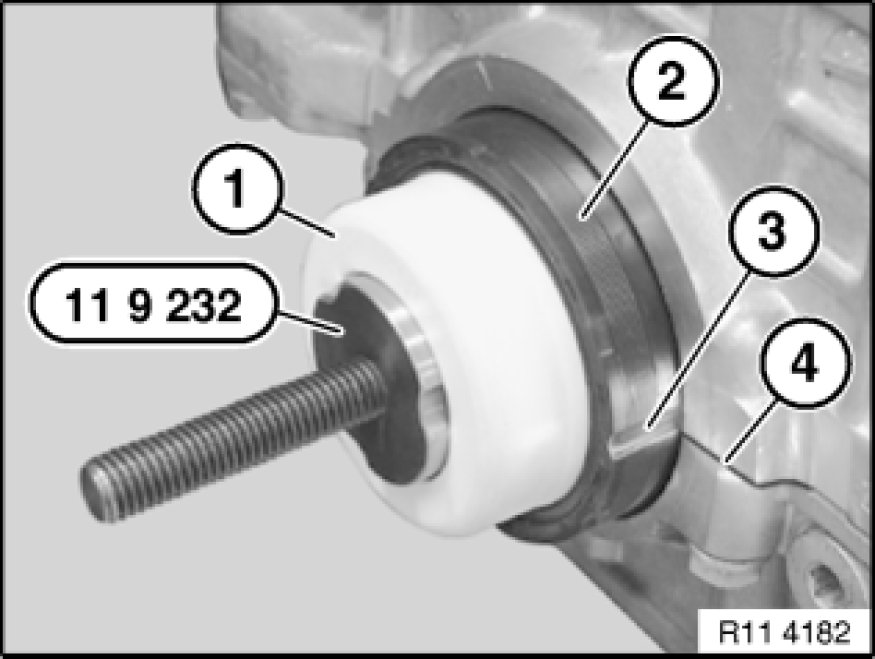
Push support sleeve (1) with crankshaft seal (2) onto special tool 11 9 232 11 9 230 Installer.
Important!
Support sleeve (1) remains on special tool 11 9 232 11 9 230 Installer, until crankshaft seal is drawn in.
Align groove (3) centrally to housing partition (4).
Coat both grooves (3) on crankshaft seal (2) with Loctite primer, manufacturer's number 171000, and expose to air for approx. one minute.
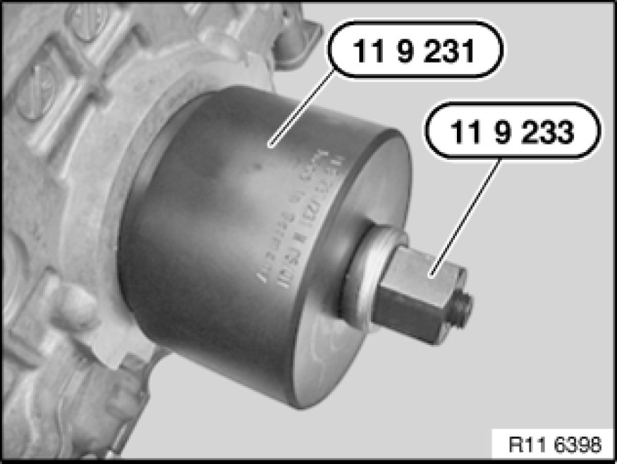
Draw in crankshaft seal with special tool 11 9 231 11 9 230 Installer in conjunction with special tool 11 9 233 11 9 230 Installer until flush.
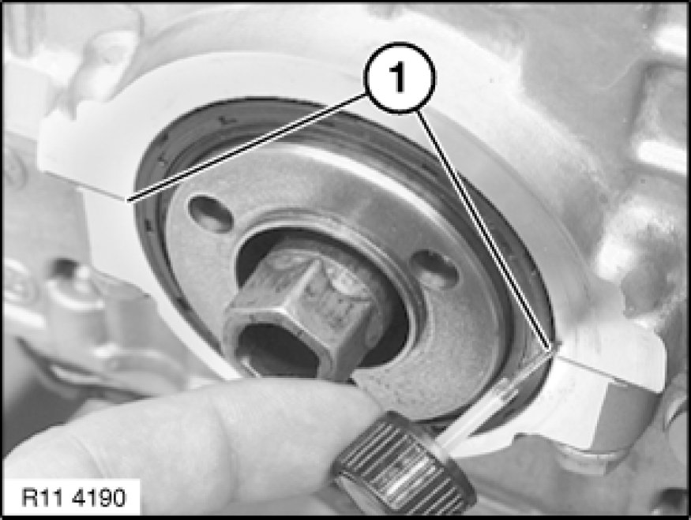
Before filling with sealing compound:
Moisten brush with Loctite primer, manufacturer's number 171000. Insert brush as far as possible into grooves (1) on crankshaft seal in order to coat housing partition on engine block.
Illustration N42.
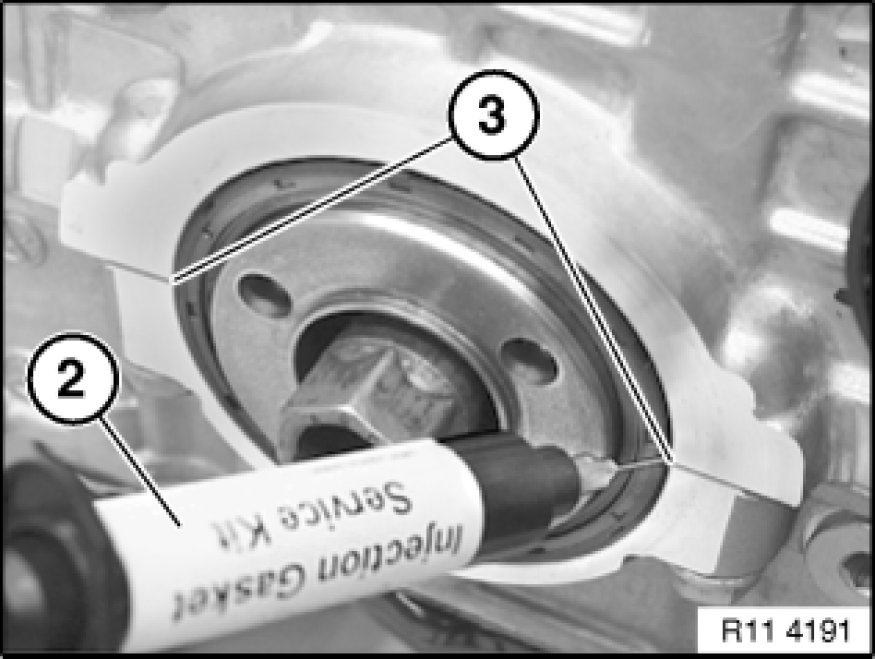
Using injector (2), fill both grooves (3) flush with Loctite sealing compound, manufacturer's number 128357.
Illustration N42.
Note:
Loctite primer, manufacturer's number 171000, binds the Loctite sealing compound, manufacturer's number 128357, and prevents leakage.
Coat surface of sealing compound in both grooves (1) with Loctite primer, manufacturer's number 171000.
Illustration N42.
Assemble engine.